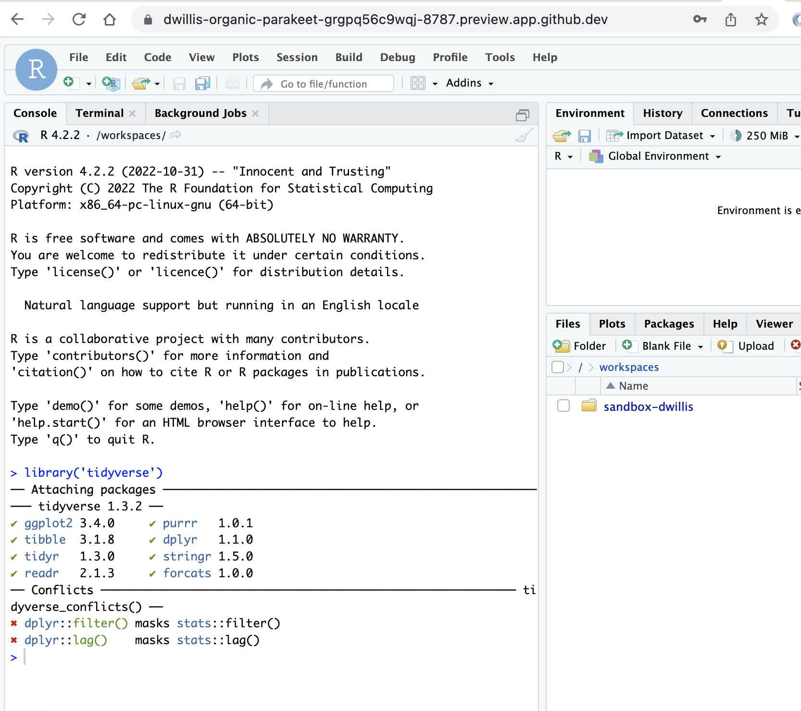

The first version of my News Application Development class at Maryland got off to a rough start.
Not because of the students; I had seven intrepid undergraduates and grad students take the leap into a class that we previously hadn’t offered and I had never taught. They were up for it, if not exactly certain what actually was going to happen in our class. As this was the first brand-new class that I had developed at Maryland, I wasn’t totally certain, either.
What I did know was that I wanted students to spend a lot of time on the command line working in Python to acquire public data and build things from it. To do that, I had to make sure that each of them would be able to do similar work on their own laptops, which meant an early session of class was titled “Install Party!”.
Friends, it was not a party. Or maybe it started out as one and then, well, the Slickee Boys can take it from here.
I am, for better or worse, an Apple computer person and have been for awhile. Our college has both PCs and Macs, although students mostly have access to the latter if they need to use a computer other than their own. But really, students have been taught since high school (maybe before) to just use their own computers. Pandemic restrictions only reinforced that. More to the point, they are taught specific programs and mostly not encouraged to explore the limits of the machine that plays a big role in their lives. To a certain extent, that’s not a bad thing to do; the software we use to teach data journalism, RStudio, is itself mostly a GUI experience.
For many of my students, installing languages and libraries was a new and uncomfortable experience. That’s not the hard part; students are mostly interested in new things. The hard part is the lack of consistency across their laptops. They not only ran into problems installing and setting up Python, they ran into different problems. Some of them were platform-related: we had a couple of Windows users. Most of the Mac users had never before installed XCode or its command-line tools and didn’t understand the purpose or know what to expect. The Windows users had it worst; I had forgotten most of what I used to know about doing web development work in that environment.
For the most part, we figured it out eventually. But that cost us both time and, I’m sure, some level of enthusiasm. Who wants to start out a new thing by flailing around for awhile? One student ended up installing a Linux subsystem to make things easier, which definitely resolved a lot of problems but is not something I’d realistically be able to insist upon. One of the lowest points was not being able to understand why something wasn’t working for a student when it was on my laptop. “Works for me” is a statement of failure for teachers.
This technical tax also has some more pernicious effects. Some number of students show up at the University of Maryland armed with a solid ChromeBook, which is what they were told they would need in high school. I can understand why; it’s a basic laptop that teenagers can use on common tasks that doesn’t cost a ton of money. School districts can and do provide them. But let’s be honest here: showing up to journalism school with a ChromeBook is like bringing a knife to a gun fight: there are many things you can do, but your range of options (and ultimately, effectiveness) are limited. And let’s be even more honest: the same students who are showing up with ChromeBooks most likely are those who cannot afford more expensive hardware. Don’t think for a moment that they can’t look around the classroom and see that situation, and wonder how they’re going to keep up.
There’s a larger argument to be made about colleges providing students with options for getting the equipment they need to take the classes they want and to succeed in them, but here’s my stop-gap solution. This semester’s News Apps class had no install party, even with twice as many students. There has been very little class time spent on making sure that things are configured properly. We all use GitHub’s Codespaces.
I will try not to turn this into a lovesong to this product, but honestly it has solved many of the problems that I encountered last year. More importantly, it has solved a lot of my students’ problems in the sense that they can focus the bulk of their time trying to learn how to do things as opposed to how to prepare to do things. Codespaces is a virtual machine in a browser that gives you a terminal, the ability to install, configure and run most things you’d need to for web development and related tasks, including running web servers so you can see the results of your work. As it’s a GitHub joint, it works off repositories and is already setup so that users can push and pull their work. I’ve even gotten RStudio to run using the RStudio Server version. And it’s not just a terminal; they get a code editor and a file manager, so they aren’t left staring at a shell wondering what this even is.

Here’s how it works: educators can get access to Codespaces for their students - up to 180 hours a month, which so far has been more than sufficient to the task - by setting up a GitHub Classroom account for your course. You use GitHub Classroom to create assignments; when students accept them, a repository is created in a GitHub organization you setup.
You can customize the virtual machine that students get, with the default being a typical Linux distribution, and you can have it come with certain packages already installed. For the purposes of working in Python, the default setup gets you access to pip, pipx, pipenv and probably other package managers.
When I spoke about how our class is using Codespaces at NICAR a few weeks ago, it was to a room full of educators for whom the benefits are pretty clear: everybody can work from the same setup, you can control the environment and even run students’ code in a Codespace of your own. It’s definitely handy for instructors.
But more and more, I see this as much an equity issue. Codespaces doesn’t guarantee a good outcome - you can still write terrible code or neglect to install required libraries. But, relatively-speaking, equality of opportunity? That’s a big deal for journalism students who mostly have never written software. Some students come into classes like this already convinced that they aren’t good at this work, and setup problems - especially when others don’t have them - only reinforce that idea. Let’s not do that. Old-timers like me can wax nostalgic about how difficult things used to be and all the hoops we had to jump through to make even basic stuff work. That’s good material for a NICAR dinner. Our students deserve better, and we can provide it.